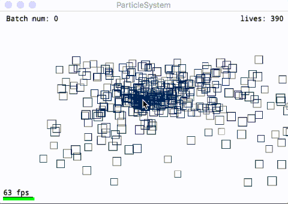
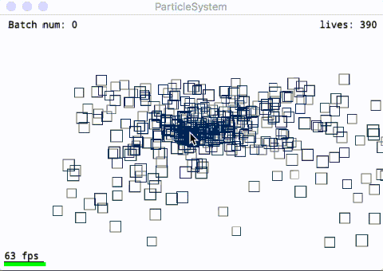

Korok.io
Korok Engine is a free lightweight, cross-platform, component-based 2D game engine written in Golang and released under the zlib license. Greatly inspired by bitsquid blog
$ go get -insecure korok.io/korok
Note for ADVENTURERS: korokengine is still in development, current release is beta.
There are still bugs and uncomplete features. The next version is v1.0 which will be a stable version.
Features:
- Very fast to build and run!
- Component based architecture
- Cross platform (OSX/Windows, now)
- Auto sprite-batch support
- Tween/Sprite Animation
- Imgui based GUI system
- Lots buildin components
Examples
Text

Sprite

Input Control

Sprite Animation

Tween Animation

ParticleSystem

